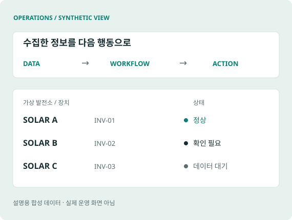

O&M 모니터링
여러 사이트의 데이터를 집계하고, 인버터 단위 상태를 웹과 텔레그램에서 확인하도록 구현했습니다.
운영 중 · 사용자 설명
사례 자세히 보기 ↗BUSINESS CONTEXT → WORKING SYSTEMS
현업의 업무를 직접 배우고 병목을 찾아, 필요한 사람과 기술을 연결해 해결합니다. 에너지 분야의 O&M 모니터링, 실적 처리 자동화, 사업성 사전 검토와 AUDPlatform 기반 영업·수주·주간회의 업무 개발을 맡아 왔습니다.
CONNECT THE WORK

여러 사이트의 데이터를 집계하고, 인버터 단위 상태를 웹과 텔레그램에서 확인하도록 구현했습니다.
정기 요청 메일과 회신 데이터의 파싱·DB 적재를 연결해 반복 업무를 자동화했습니다.
주소만으로 사업성을 검토하고 싶다는 요청을 현업 인터뷰로 구체화하고, 외부 데이터와 수익성 분석을 연결했습니다.
HOW I WORK
AI를 구현과 검증에 활용하고, 최종 결과는 직접 확인하며 현업의 피드백으로 개선합니다. AUDPlatform에서는 영업·수주 관리와 주간회의를 구현·개선했습니다. 홈페이지 기획·제작(현재 개발·검토 중)과 설명 영상까지, 낯선 과제도 필요한 지식과 도구를 익혀 책임지고 추진합니다.
DOWNLOAD
초간략본 · 한국어